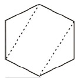
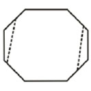
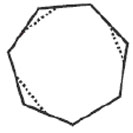
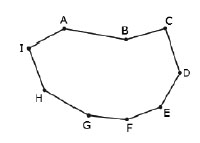
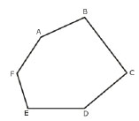

1. En la clase de Matemáticas II, el profesor mostró la siguiente tabla, en la cual n representa los lados de un polígono y D el total de diagonales que se pueden trazar en sus vértices.
| n | 4 | 6 | 8 | 10 | 12 | 14 |
| D | 2 | 9 | 20 | 35 | 54 | 77 |
- A. 96
- B. 104
- C. 135
- D. 170
A partir de un vértice de un polígono de n lados, se pueden trazar n-3 diagonales (no puede trazarse diagonales a los vértices consecutivos y al vértice mismo.
| Numero de vértices | diagonales |
|---|---|
| 3 (Triangulo) | 0 |
| 4 (Cuadrilatero) | 1 |
| 5 (Pentágono) | 2 |
| 6 (Hexágono) | 3 |
| n | n-3 |
El número de diagonales totales (las que pueden trazarse entre todos los vértices se obtiene al multiplicar el número de diagonales desde un vértice por el numero de vértices y dividiendo el resultado por dos (puesto que como cada diagonal une dos vértices, al contarlas desde cada vértice se duplica el conteo).
Por ejemplo en un hexágono se pueden trazar 3 diagonales desde un vértice y 9 diagonales totales.
Para un hexágono: n=6
Diagonales desde un vértice: d=6-3=3
Diagonales totales:
Guía de Evaluación al ingreso de la Educación Superior Tecnológica 2004
314 palabras
1. En la clase de Matemáticas II, el profesor mostró la siguiente tabla, en la cual n representa los lados de un polígono y D el total de diagonales que se pueden trazar en sus vértices.
| n | 4 | 6 | 8 | 10 | 12 | 14 |
| D | 2 | 9 | 20 | 35 | 54 | 77 |
2. Si se corta por las líneas punteadas al hexágono, como se muestra en la figura,  ¿Cuántas diagonales internas se pueden trazar en la figura resultante?
3. Si se corta por las líneas punteadas al octágono, como se muestra en la figura, ¿cuántas diagonales internas se pueden trazar en la figura resultante? 
4. Si se corta por las líneas punteadas al heptágono, como se muestra en la figura, ¿cuántas diagonales internas se pueden trazar en la figura resultante? 
5. Si se hace un corte recto por los puntos B y E de la siguiente figura, ¿cuántas diagonales tiene la figura resultante con mayor número de vértices? 
6. Se corta la siguiente figura con una línea recta de A a B.  ¿Cuántas diagonales se pueden trazar en la figura más grande?